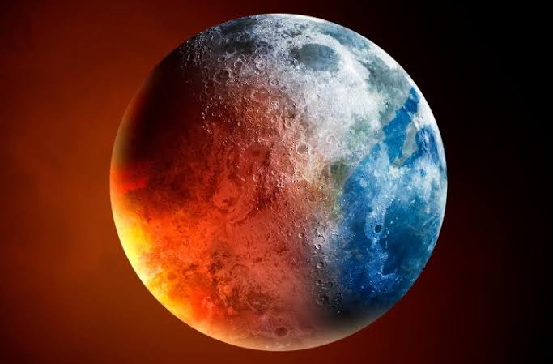
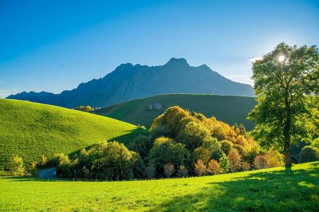
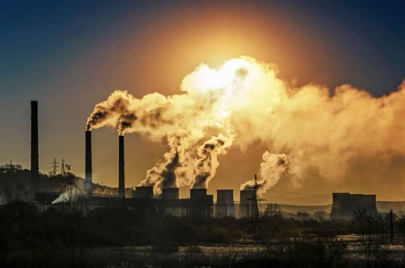
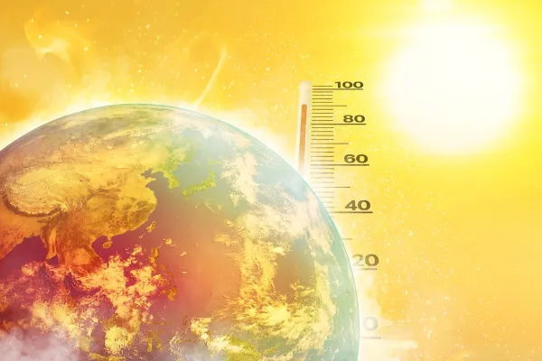
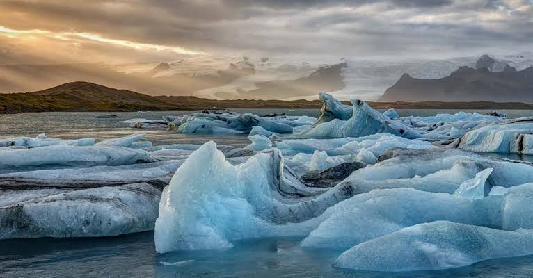
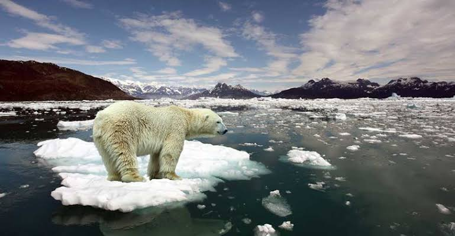
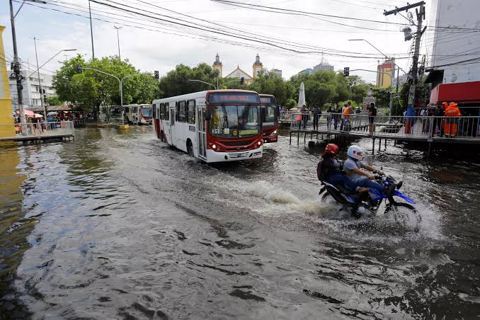

O efeito estufa é um processo 100% prejudicial ao planeta?

Mito! O efeito estufa natural é essencial para manter a Terra aquecida e habitável. O problema é o seu agravamento pela ação humana.

O efeito estufa é um processo 100% prejudicial ao planeta?

Mito! O efeito estufa natural é essencial para manter a Terra aquecida e habitável. O problema é o seu agravamento pela ação humana.

O aquecimento global causa apenas o aumento do calor no planeta?

Não! Ele desregula o clima global, causando também nevascas severas, tempestades extremas e secas prolongadas.

O derretimento das geleiras afeta apenas os animais dos polos?

Mito! O derretimento eleva o nível dos oceanos, ameaçando cidades costeiras e milhões de pessoas no mundo todo.

Ainda dá tempo de diminuir os impactos do aquecimento global?
Verdade! Reduzindo a emissão de carbono e usando energias renováveis, podemos desacelerar as mudanças climáticas.